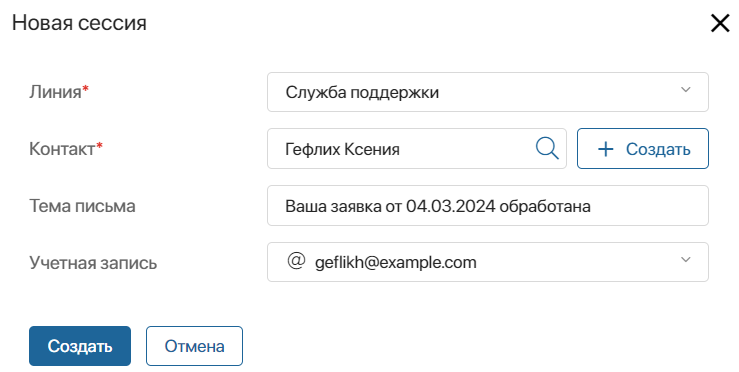
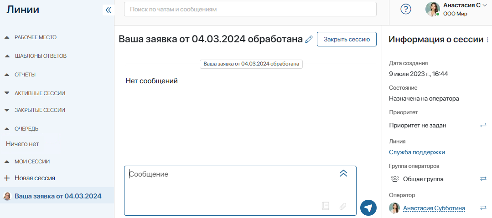
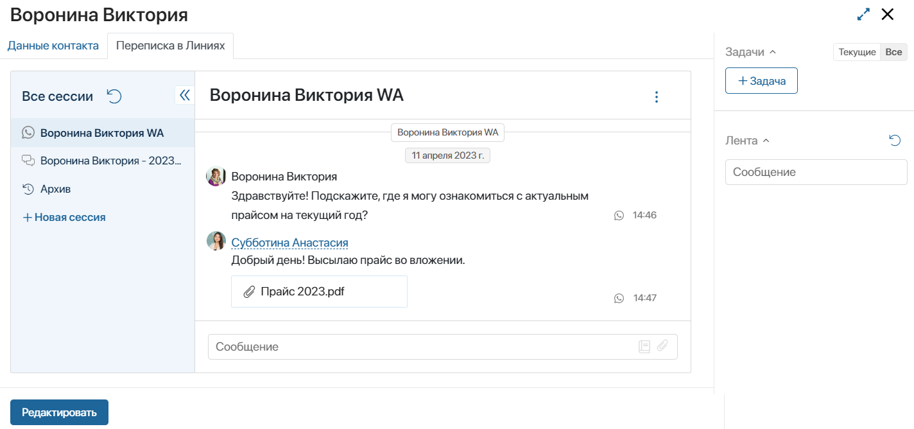

If there are messengers or an email account connected to a live chat, operators of this live chat can create new sessions and initiate conversations with clients and partners. This can be done in the Live Chats workspace or on the pages of apps bound to live chats.
For example, if you know a customer’s phone number, you can send a message to their WhatsApp account. This is also convenient if you need to reopen a closed session with a customer who previously contacted you.
Please note that operators in the Offline status cannot create new sessions.
Initiate a session in the Live Chats workspace
To create a new session, do the following:
- Go to the Live Chats workspace. In the My Sessions section, click +New Session.
- In the provided window, specify the name of the live chat. You must be specified as an operator in its settings.
- Click on the magnifying glass icon and add a user from the app specified in the To bind an account field in the live chat's settings. For example, the Tech Support live chat may be bound to the Contacts app that stores data of all the users who have contacted you.
To start messaging a new customer, you can add a new item to the app specified in the To bind an account field by clicking +Create.
- Specify the customer’s account: their phone number linked to the messenger or their email address. The type of account must match the type of communication channel set up for the live chat. For example, you cannot create a session in a live chat that is connected to an email inbox if you filled out the Account field with the customer’s phone number instead of their email address.
When selecting an email, you can set the subject of the email, which is also used as the session name. If the field is left blank, the name generated by the template set by the administrator is used as the subject.

- When you fill out the form, click Create.
The session that opens is automatically assigned to the operator who initiated it. You can start messaging the customer right away.

Initiate a session on the page of a bound app item
If there is an app bound to a live chat, operators can link sessions with items of this app. On the page of the bound app item, operators can view the chat history, reply to messages from the customer, and also create new sessions with them.
This is possible if the Live Chat Messages widget is placed on the view form of the app bound to the live chat.

To initiate a chat with the customer, click +New Session in the widget’s left menu. Then set the session’s parameters: specify the live chat, customer, and customer's account.
After that, the session window will open, which will be automatically assigned to the operator who created it. You can start a dialog with the client from the widget.
Contact a customer within a business process
The system administrator can configure a message to be sent to a user from a live chat within a business process. For example, you can automatically notify the customer about the order readiness via email. Such messages are sent without the operator’s participation and are displayed in the chat with the client in the Live Chats workspace.
Read more in the Send Live Chat Message article.
Important connection details
There are some things you need to take into account when creating sessions in the live chats depending on the channels connected to them:
- You cannot create a new session using an instant messenger if you already have an opened session linked with the same account.
- In live chats connected to an email inbox, you can create a new session with a user even if a session linked with the same email address already opened.
- In live chats connected to TelegramBot, you can initiate a session only with a person who has contacted you before.
- When initiating a session via WhatsApp, enter the customer’s phone number in the full international format including the plus (+) sign followed by the country code.
- When creating a session in a live chat connected to an inbox, you can specify the customer’s email address from fields of both the Account and Email types.
- Operators cannot initiate sessions in the online LiveChat.
Found a typo? Select it and press Ctrl+Enter to send us feedback